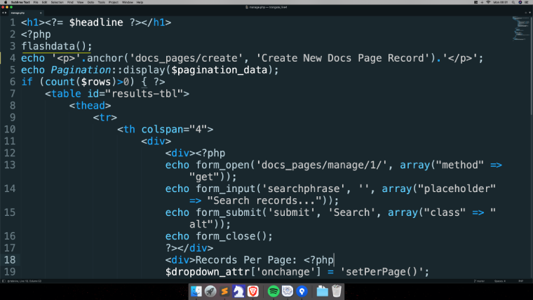

Trongate supports 'flashdata'. Flashdata is session data that will only be available for the next request, before being automatically removed. This can be useful for one-time informational messages (for example: 'The record was successfully created').
Flashdata can be set with one line of code which takes the form:
set_flashdata($msg);
This is assuming that you have a message which, in this instance, has been assigned to a $msg variable. For example.
$msg = "The record was updated";
set_flashdata($msg);Of course, you can save a line of code by passing your message directly into your flashdata declaration. For example:
set_flashdata("The record was updated");Flashdata can be displayed by calling flashdata() from within a view file.
flashdata();By default, flashdata messages will be displayed as green text within a paragraph. However, you can change the format of your flashdata by adding optional opening and closing tags as arguments. For example:
flashdata-with-tagsBelow is an example of a view file that contains the flashdata() method.
